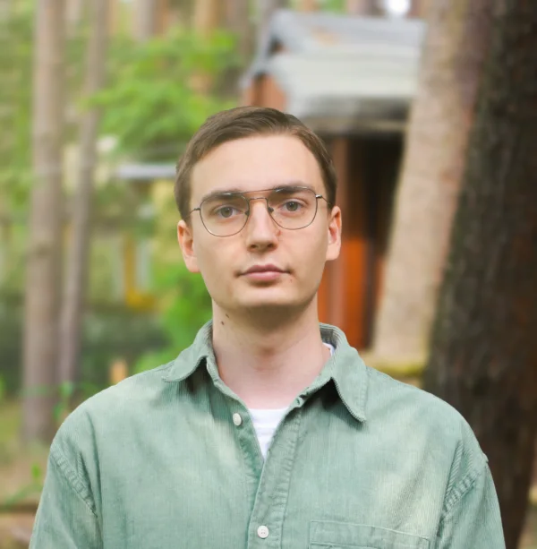

Raphael Götz
Dual computer science student at Duale Hochschule Sachsen and software engineer focused on backend systems, services, and practical software development.
Selected work
Projects
CodeZero
2023 - present
CodeZero is an open-source no-code automation
and AI orchestration platform.
View project
o7studios
2023 - present
o7studios builds large-scale Minecraft servers,
events, and reusable developer tooling.
View project
Uroria Network
2021 - 2023, discontinued
Uroria Network was a Minecraft server project
focused on user experience.
View project
About
I got into programming through Minecraft projects because they made ideas feel immediate. I could build something, let people use it, and quickly see what worked. That practical way of learning still shapes how I approach backend services, tools, and project work today.